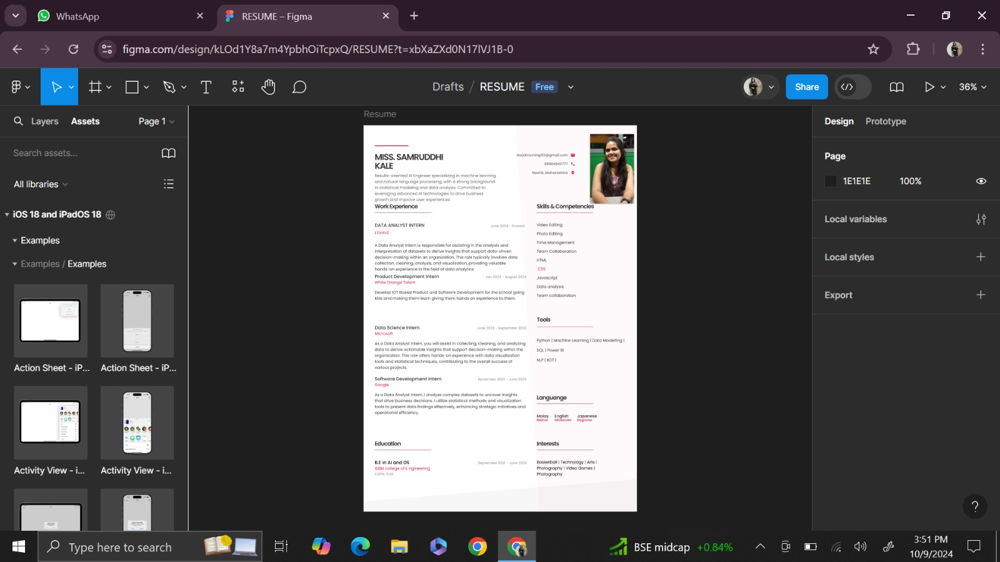
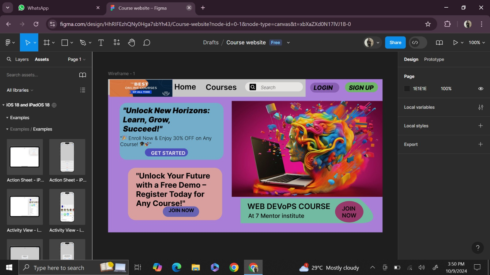
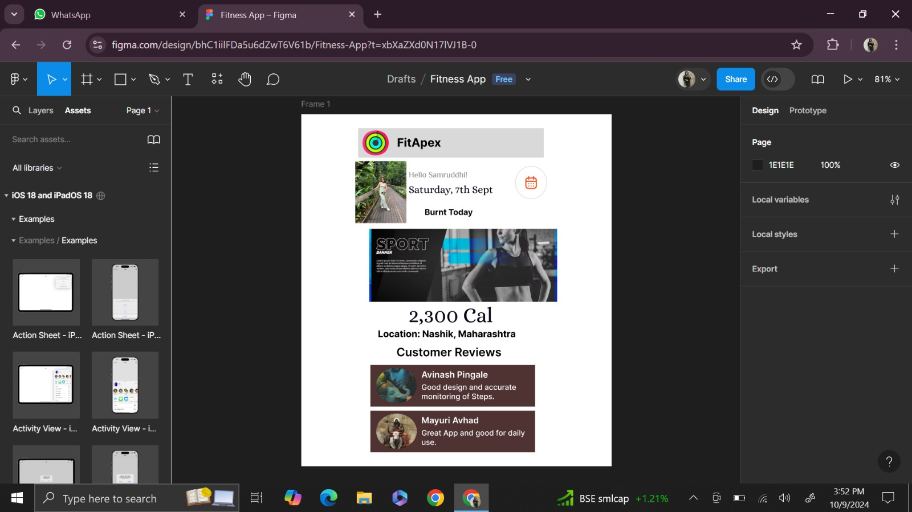
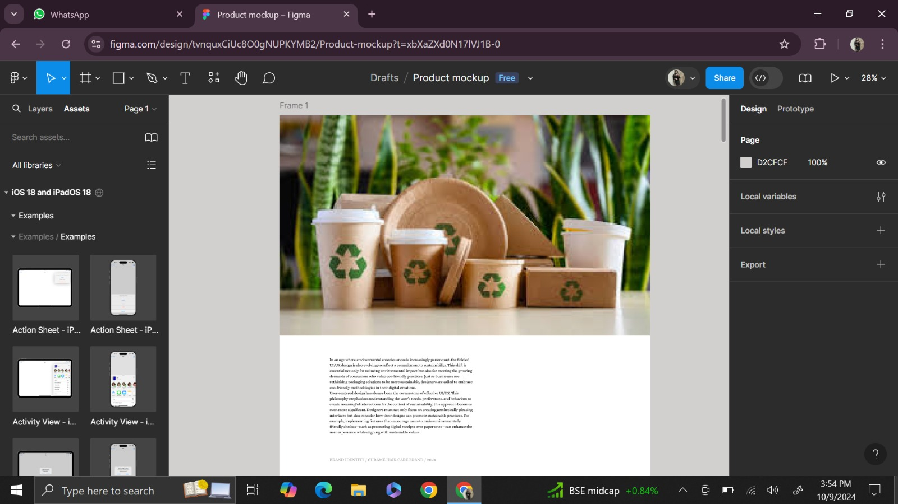
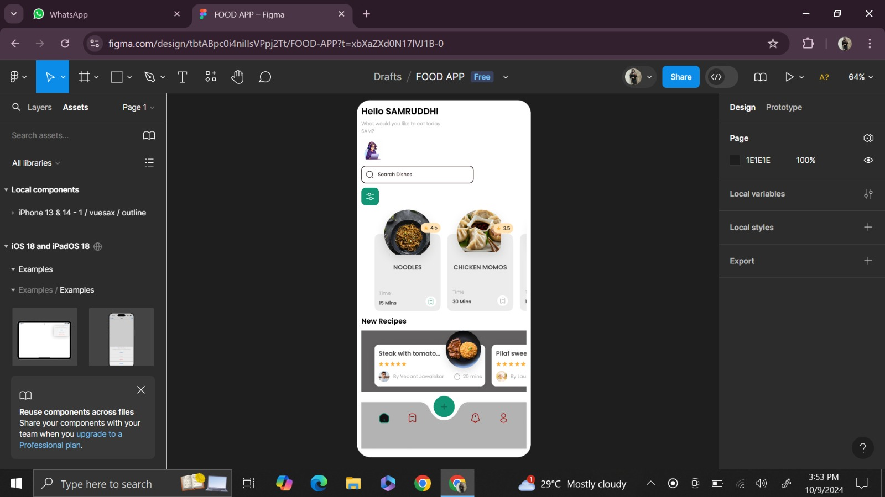
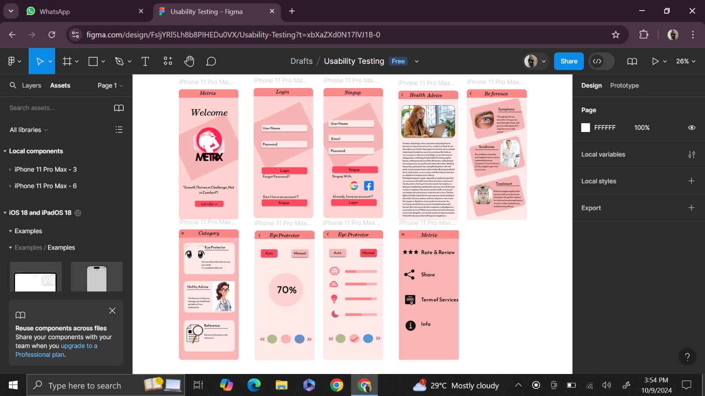

UI/UX Projects
1. Design user persona for the users of selected product / system.

2. Online Learning Platform: Design a wireframe for an online learning platform that includes
course listings, video lectures, quizzes, and progress tracking.

3. Designing a Social Fitness App: Created wireframes and a prototype for a social fitness app
that allows users to track workouts, connect with friends, and share progress. Design the user
interface for logging exercises, setting goals, and incorporating social features.

4. Product Packaging Mockup

5. Use Figma tool to Design a user interface for a recipe finder application, allowing users to
search for recipes based on ingredients, categories, and dietary restrictions. Include features like
recipe details, cooking instructions, and saving favorites.

6. Usability Testing Simulation: Develop a high-fidelity interactive prototype using any UI/UX
tool. Prepare a usability testing plan, recruit participants, and simulate usability testing sessions.
Analyze the feedback and iterate on the design based on the insights gathered during the testing.
